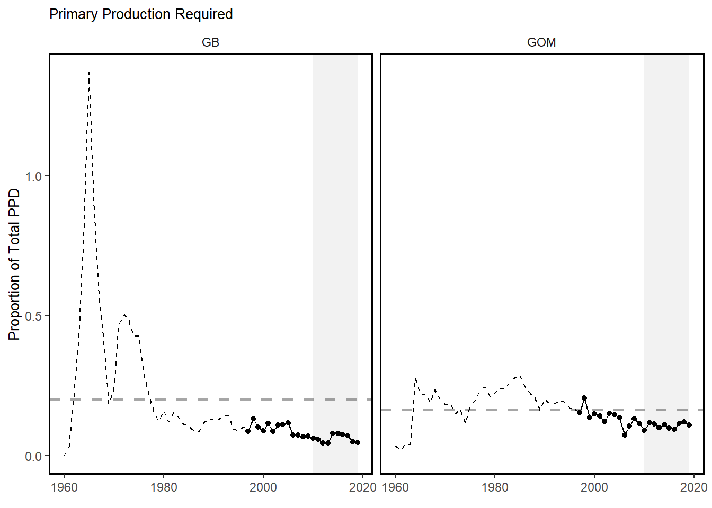
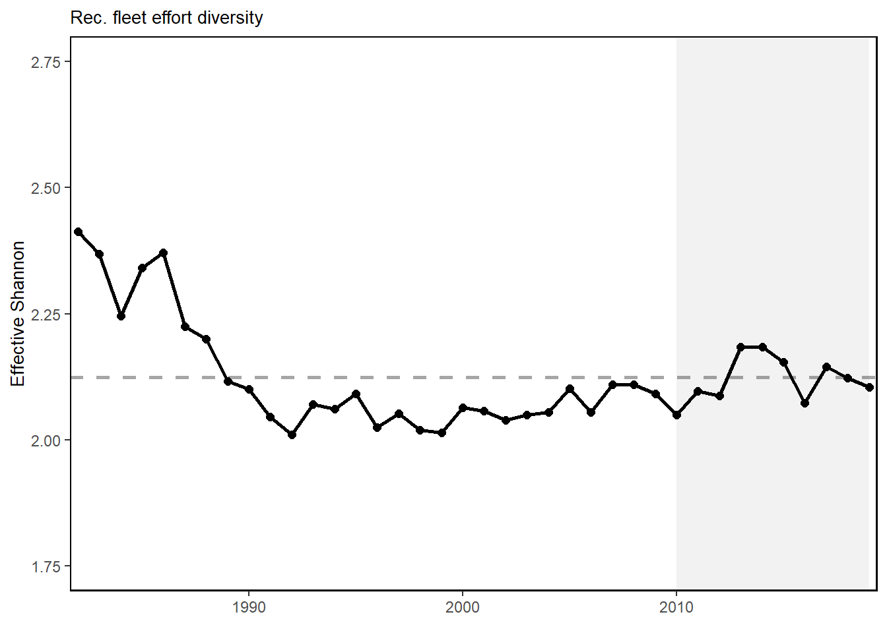
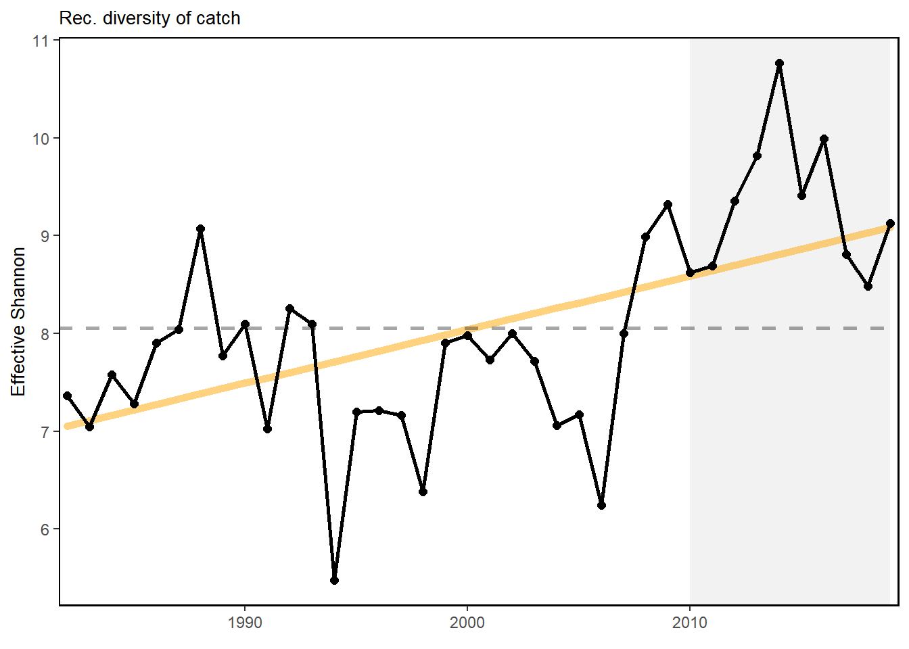

Primary Production Required

Primary production required to support the commercial landings. Included are the top species accounting for 80% of the landings in each year.
Trend lines are shown when slope is significantly different from 0 at the p < 0.05 level. An orange line signifies an overall positive trend, and purple signifies a negative trend. To minimize bias introduced by small sample size, no trend is fit when N < 30. Dashed lines represent mean values of time series unless the indicator is an anomaly, in which case the dashed line is equal to 0. Shaded regions indicate the past ten years. If there are no new data for 2018, the shaded region will still cover this time period.
NEFMC managed species landings (red) and total commercial landings (black) by feeding guild in Gulf of Maine (left) and Georges Bank (right).
NEFMC managed species landings (red) and total commercial landings (black) by feeding guild in Gulf of Maine (left) and Georges Bank (right).
## NULL![HMS groups include “Bluefin Tuna”, “BAYS”, “Swordfish”, “Large Coastal Sharks”, “Small Coastal Sharks”, “Pelagic Sharks”, “Smoothhound Sharks”. “BAYS” includes bigeye, albacore, yellowfin and skipjack tunas. “Large Coastal Sharks” includes blacktip, bull, great hammerhead, scalloped hammerhead, smooth hammerhead, lemon, nurse, sandbar, silky, spinner, and tiger sharks. “Small Coastal Sharks” includes Atlantic sharpnose, blacknose, bonnethead, finetooth sharks. “Pelagic Sharks” includes blue, porbeagle, shortfin mako, and thresher sharks. “Smoothhound Sharks” includes smooth dogfish shark.](human_dimensions_NE_files/figure-html/hms-commercial-landings-1.png)
HMS groups include “Bluefin Tuna”, “BAYS”, “Swordfish”, “Large Coastal Sharks”, “Small Coastal Sharks”, “Pelagic Sharks”, “Smoothhound Sharks”. “BAYS” includes bigeye, albacore, yellowfin and skipjack tunas. “Large Coastal Sharks” includes blacktip, bull, great hammerhead, scalloped hammerhead, smooth hammerhead, lemon, nurse, sandbar, silky, spinner, and tiger sharks. “Small Coastal Sharks” includes Atlantic sharpnose, blacknose, bonnethead, finetooth sharks. “Pelagic Sharks” includes blue, porbeagle, shortfin mako, and thresher sharks. “Smoothhound Sharks” includes smooth dogfish shark.
Total commercial seafood landings (black) shown with NEFMC managed seafood landings (red) in Gulf of Maine (left) and Georges Bank (right).
Revenue change from the long-term mean in 2015 dollars (black), Price (PI), and Volume Indicators (VI) for commercial landings in Georges Bank (left) and Gulf of Maine (right).
Revenue change from the 2015 values in dollars (black), Price (PI), and Volume Indicators (VI) for commercial landings in the Mid-Atlantic Bight.
Revenue change from the long-term mean in 2015 dollars (black), Price (PI), and Volume Indicators (VI) for commercial landings in Georges Bank (left) and Gulf of Maine (right).

Total commercial revenue (black) and revenue from NEFMC managed species (red) in Georges Bank (left) and Gulf of Maine (right).
HMS revenue.
Fleet diversity and fleet count in New England.
Species revenue diversity in New England.
Summary of single species status for NEFMC and jointly managed stocks.
Commercial engagement and reliance for the top top commercial fishing communities in New England. (* Scored high (1.00 and above) for both commercial engagement and reliance indicators)
Environmental Justice indiciators (PDT =Personal Disruption Index, PCI =Population Composition Index, PI = Poverty Index)

Environmental Justice indiciators
Oyster aquaculture production in terms pieces, lease area and production by acre through 2020.
Oyster aquaculture production in pieces for four New England states (Maine, Massachusettes, New Hampshire and Rhode Island).
Oyster aquaculture production in pieces for four New England states (Maine, Massachusettes, New Hampshire and Rhode Island).
Total recreational landings in New England.
Recreational effort, recreational effort diversity, number of recreational anglers, and diverstiy of recreational catch in New England


Environmental Justice indiciators (PDT =Personal Disruption Index, PCI =Population Composition Index, PI = Poverty Index)

Recreational shark Landings from mrip.
Primary production required to support the commercial landings. Included are the top species accounting for 80% of the landings in each year.
Fogarty Index
Ryther Index
Mean tropic level
FReonstructed primary production
Total (left) and percent (right) of New England port revenue and social vulnerability indicators from wind energy areas.